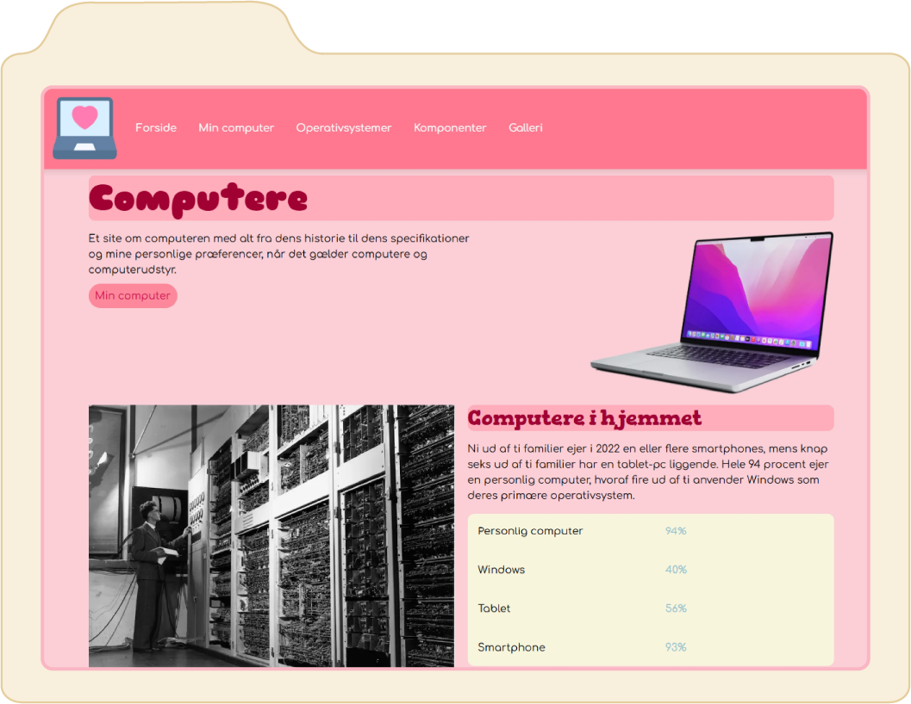
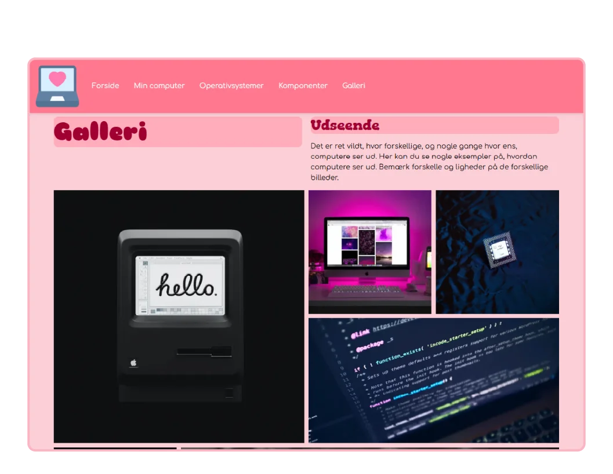
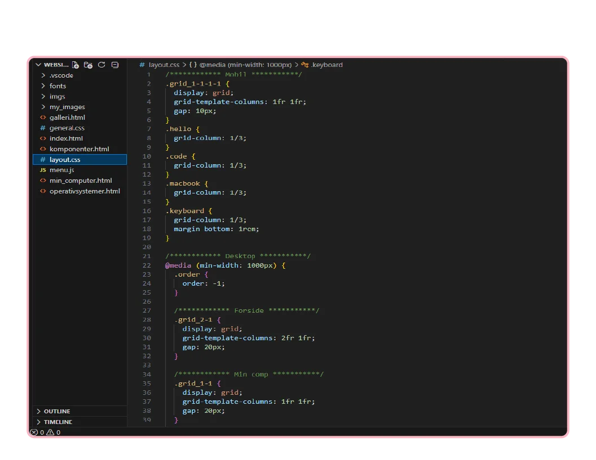

Grundlæggende Web
Tema 2
Formål
Dette første tema giver en grundlæggende introduktion til de mest anvendte redskaber i en multimediedesigners værktøjskasse. Redskaberne udgør fundamentet for resten af din uddannelse på MMD.
Du vil blive introduceret til grundlæggende faglige begreber inden for design af digitale brugergrænseflader, digital indholdsproduktion, digital kommunikation og responsivt webdesign.
Du lærer at sætte websider op i html og css og får de første hands-on færdigheder inden for udarbejdelse af grafik og billedbehandling samt opsætning af tekst og billeder i Figma.

Første indtryk
I dette tema prøvede jeg for første gang at kode i HTML og CSS. Det var en helt ny verden, som var utrolig spændende at dykke ned i.
Det gik hurtigt op for mig, hvor meget arbejde der faktisk ligger bag en hjemmeside, og hvor mange nye ting jeg skulle lære. Selvom jeg glædede mig, var det også en smule intimiderende at starte på et emne, jeg aldrig havde stiftet bekendtskab med før.
Min opgave var at designe og kode min egen hjemmeside. Det var en sjov proces, hvor jeg selv skulle eksperimentere med alt fra farvekontraster til fonte. Som det ses på billedet, endte jeg med at vælge et lyserødt tema med en blød, boblende font en stil, jeg faktisk har ladet mig inspirere af og taget med videre i designet af denne portfolio.

Mobile first
En lektion på den hårde måde
I dette tema lærte jeg vigtigheden af Mobile First princippet, som kort sagt går ud på at kode mobilversionen af sit website før desktopversionen. Det var en lektion, jeg lærte på den hårde måde.
Jeg havde oprindeligt kodet desktopversionen først, hvilket skabte store problemer, da jeg efterfølgende skulle tilpasse sitet til mobil. Særligt galleriet, som kan ses på billedet, drillede meget. Når man koder skrivebordsversionen først, vil mobilkoden ofte gå ind og overskrive CSS stylingen, hvilket ødelægger layoutet på de større skærme. For at løse problemet og få galleriet til at stå skarpt på alle skærmstørrelser, blev jeg nødt til at starte forfra, slette min desktop kode og bygge mobilversionen op først.
Løsningen med media queries
Nu ved jeg, at man i stedet pakker sin desktop kode ind i en såkaldt media query. Den sikrer, at koden kun træder i kraft og ændrer på layoutet, når skærmen har en bestemt minimumsbredde i pixels.

Vscode
Et helt nyt sprog
Det editorprogram jeg bruger til at kode i hedder VS Code, hvilket var helt nyt for mig. Der findes utroligt mange forskellige kommandoer og tags, som alle har specifikke egenskaber, og som kan sammensættes på kryds og tværs. Det føltes i starten som at skulle lære et helt nyt sprog med en masse nye begreber.
En nål i en høstak
Samtidig lærte jeg hurtigt, at der skal utroligt lidt til, før koden fejler. Det kan være alt fra en lille stavefejl eller et glemt semikolon til, at jeg har glemt at linke mit CSS stylesheet korrekt i HTML dokumentet. Det kan være svært at lokalisere de små fejl i et stort hav af kode, især når man er ny, og det føles ofte som at lede efter en nål i en høstak.
Jeg sad derfor tit efter undervisningen og stirrede mig blind på skærmen, men her var det guld værd at sparre med mine studiekammerater, så vi kunne give hinandens kode et par friske øjne og finde fejlen.